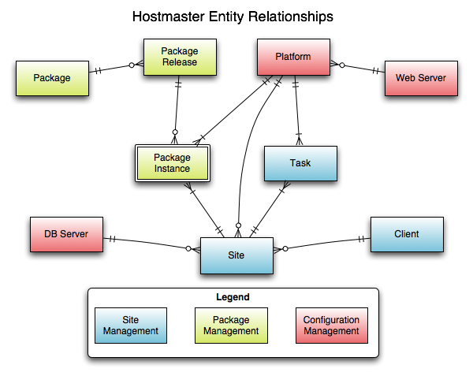

Design & Terminology
This page documents many of the different terms used when referring to components of the Aegir Hosting System, and how the different entities relate to each other.
Terminology
Front End
The user interface used to administrate your sites. The front end is provided by the Hostmaster install profile, and the Hosting contributed module. It defines a complete Drupal based data model for managing the various aspects of your installation.
Entities
These entities are used primarily in the front end to manage the configuration and data. Upon calling the back end, the system breaks down the properties of these entities to be passed as options for the command line, so the back end only has a flat data structure to work with. During this process, all relationships are automatically retrieved, making it a one step process for the developer.
Client
The person or group that runs the site. This information is usually required for billing and access purposes, to assure that only certain people are able to view the information for sites they run. If you do not intend on having more than one client access the system, you will not need to create any additional clients for your purposes.
Site
An instance of a hosted site. It contains information relating to the site, most notably the domain name, database server and platform it is being published on. A site may also have several aliases for additional domains the site needs to be accessible on.
Task
The mechanism whereby Hostmaster keeps track of all changes that occur to the system. Each task acts as a command for the back end, and contains a full log of all changes that have occurred. If a task should fail, the administrator will be notified with an explanation of exactly what went wrong, and how to fix it.
Platform
The file system location on a specific web server on which to publish sites. Multiple platforms can co-exist on the same web server, and need to do so for upgrades to be managed, as this is accomplished by moving the site to a platform hosting an updated release. Platforms are most commonly built for specific releases of Drupal.
Server
The server that provides various services.
Service
The service that runs on the server. This might be HTTP or a Database server. Each web server hosts one or more platforms, which act as publishing points for the hosted sites. If you are not intending to use Hostmaster in a distributed fashion, you will not need to create additional web servers for your purposes. Most web servers and database servers are on the same machine, but for performance reasons external database servers might be required. It is not uncommon for one database server to be shared amongst all site instances. If you are not intending to use an external database server, or multiple database servers, you will not need to create any additional database servers for your purposes.
Service type
The type of service that runs on the server. In the example of 'HTTP' as a service, a service type is Apache or Nginx, for example. MySQL is a type of service 'Database'.
Package
An installable component for a site. Hostmaster keeps tracks of all the modules, themes and install profiles installed across your entire network. These packages most commonly link to their project on drupal.org, but might not in the case of custom modules. Users are not able to create nodes of this type, as they are generated automatically during verify and sync tasks.
Package Release
The release of a specific package. Each package on your network has at least one installed release, and each platform (including Drupal itself) may have several releases installed across your network.
Package Instance
Where a package release has been installed. A package release may be installed in multiple places on a platform, and sites may have access to multiple versions of packages. This entity also tracks which modules are enabled, and what version of the schema (if any) they have installed.

Task types
These are "hosting commands" that the server can accomplish. These are mapped to back end commands by the task queue processor.
Verify platform
Verify that a platform is correctly installed. Automatically created when new platforms are added, to ensure that they are capable of having new sites installed on them. Operates on: platforms
Import sites
Import existing sites onto a platform. Operates on: platforms
Install site
Install a new site. This is automatically generated when a site node is created. Operates on: sites
Sync site
Synchronize changes to the site record with the back end. Automatically generated on editing of the site node. Operates on: sites
Backup site
Generate a backup of an existing site. This backup contains everything needed to run the site. Operates on: sites
Restore backup
Restore a site to a previous backed up version. Operates on: sites
Disable site
Disable a running site. This is commonly used in the case of non-payment from clients. Operates on: sites
Enable site
Enable a disabled site. The opposite of Disable. Operates on: sites
This is an incomplete list, and will be updated as more tasks are added
Queues
The front end uses and maintains several queues, which are then processed through the drush.php hosting dispatch command. More queues can be added by optional contributed modules, and are often used to provide regularly scheduled back end commands, such as backing up sites.
Task Queue
The primary and most important queue. Whenever a change is made to the data set, the front end creates a "Task" node. These task relate to such things as installing new sites, regenerating the configuration files of sites, verifying that a platform has been correctly configured and importing existing sites on a newly added platform.
Cron Queue
This queue is used to manage the regular execution of the cron process required by most sites. It is configurable with a frequency you want all the sites to be cronned within. This is commonly 1 hour, but might be higher or lower. Higher frequency will cause higher system load. This command will iterate through all enabled sites, and batch the cron calls, based on how many sites are available, and how frequently it is running.
Backup Queue
This queue operates in the same way as the cron queue, in that it iterates through all installed sites, based on a configurable frequency. This executes the same functionality as requesting a site backup through the user interface. You are able to revert back to a previous backup of your sites.
Statistics Queue
This queue operates on the same mechanism as the cron queue, and alows you to retrieve statistics of your installed sites. This will retrieve such metrics as number of registered and active users, and number of posts / comments, which will then be viewable on the front end.
Back End
The back end is a command line interface provided by the Provisioning Framework, of all the tasks it is capable of performing.
It is designed to operate separately from the front end, so that you can have multiple back ends on one or more servers.
The back end handles the server level configuration of the system, such as creating new databases and virtual host records and restarting the apache process for new installations to take effect.
When the queues are processed by the front end, these are turned into calls to the back end, for whichever server they happen to be on. The back end communicates to the front end through a very simple mechanism, whereby it returns a serialized string containing state information and log messages / error return codes.